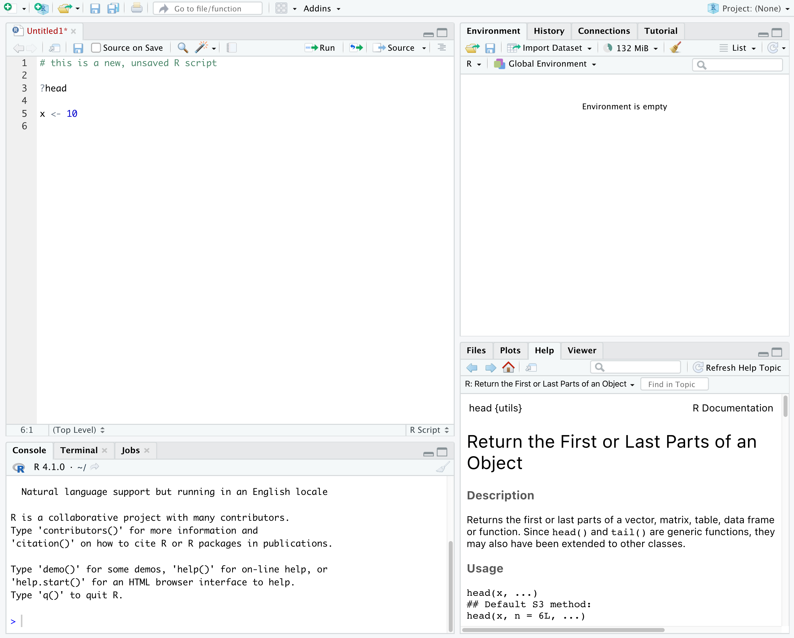
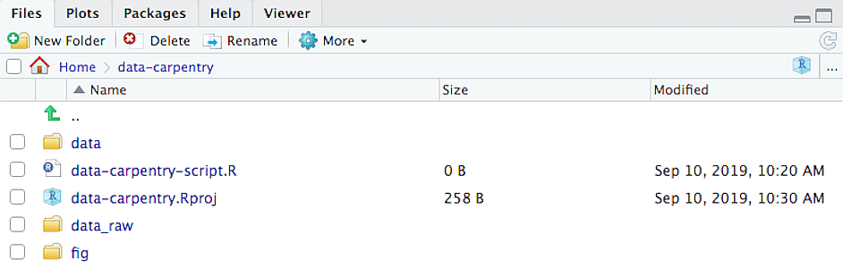
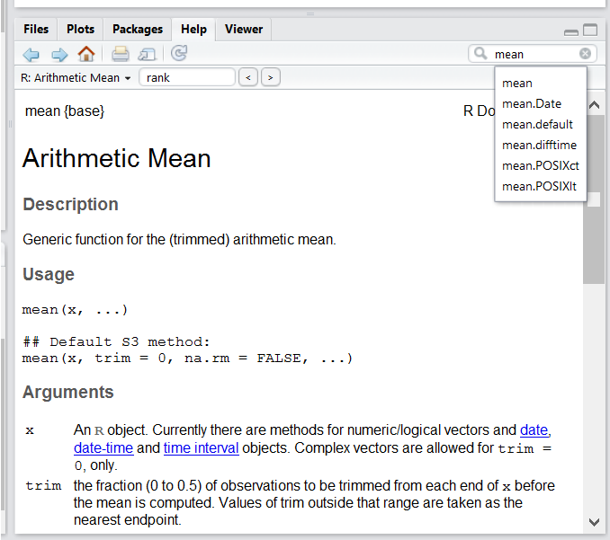
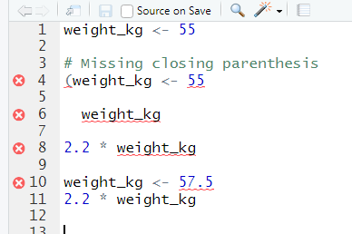
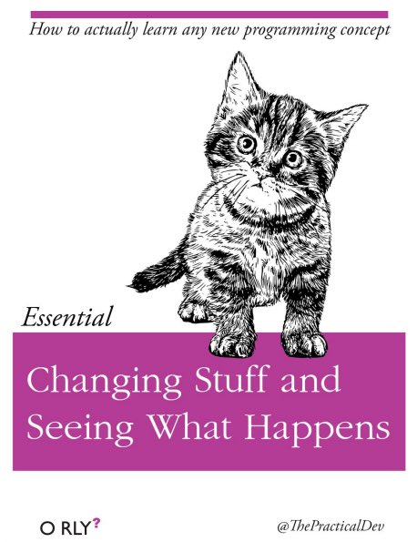

Before we start
Last updated on 2026-04-14 | Edit this page
Estimated time: 15 minutes
Overview
Questions
- Why should you use R and RStudio?
- How do you get started working in R and RStudio?
Objectives
- Understand the difference between R and RStudio
- Describe the purpose of the different RStudio panes
- Organize files and directories into R Projects
- Use the RStudio help interface to get help with R functions
- Be able to format questions to get help in the broader R community
What is R? What is RStudio?
The term “R” is used to refer to both the programming
language and the software that interprets the scripts written using
it.
RStudio is a popular way to write R scripts and interact with the R software. To function correctly, RStudio needs R and therefore both need to be installed on your computer.
Why learn R?
R does not involve lots of pointing and clicking, and that’s a good thing
In R, the results of your analysis rely on a series of written commands, and not on remembering a succession of pointing and clicking. That is a good thing! So, if you want to redo your analysis because you collected more data, you don’t have to remember which button you clicked in which order to obtain your results. With a stored series of commands in an R script, you can repeat running them and R will process the new dataset exactly the same way as before.
Working with scripts makes the steps you used in your analysis clear, and the code you write can be inspected by someone else who can give you feedback and spot mistakes.
Working with scripts forces you to have a deeper understanding of what you are doing, and facilitates your learning and comprehension of the methods you use.
R code is great for reproducibility
Reproducibility is when someone else, including your future self, can obtain the same results from the same dataset when using the same analysis.
R integrates with other tools to generate manuscripts from your code. If you collect more data, or fix a mistake in your dataset, the figures and the statistical tests in your manuscript are updated automatically.
R is widely used in academia and in industries such as pharma and biotech. These organisations expect analyses to be reproducible, so knowing R will give you an edge with these requirements.
R is interdisciplinary and extensible
With 10,000+ packages that can be installed to extend its capabilities, R provides a framework that allows you to combine statistical approaches from many scientific disciplines to best suit the analytical framework you need to analyze your data. For instance, R has packages for image analysis, GIS, time series, population genetics, and a lot more.
R works on data of all shapes and sizes
The skills you learn with R scale easily with the size of your dataset. Whether your dataset has hundreds or millions of lines, it won’t make much difference to you.
R is designed for data analysis. It comes with special data structures and data types that make handling of missing data and statistical factors convenient.
R can connect to spreadsheets, databases, and many other data formats, on your computer or on the web.
R produces high-quality graphics
The plotting functionalities in R are endless, and allow you to adjust any aspect of your graph to visualize your data more effectively.
R has a large and welcoming community
Thousands of people use R daily. Many of them are willing to help you
through mailing lists and websites such as Stack Overflow, RStudio community, and Slack
channels such as
the R for Data Science online community (https://www.rfordatasci.com/).
In addition, there are numerous online and in person meetups organised
globally through organisations such as R Ladies Global (https://rladies.org/).
Knowing your way around RStudio
Let’s start by learning about RStudio, which is an Integrated Development Environment (IDE) for working with R.
The RStudio IDE open-source product is free under the Affero General Public License (AGPL) v3. The RStudio IDE is also available with a commercial license and priority email support from RStudio, PBC.
We will use RStudio IDE to write code, navigate the files on our computer, inspect the variables we are going to create, and visualize the plots we will generate. RStudio can also be used for other things (e.g., version control, developing packages, writing Shiny apps) that we will not cover during the workshop.

RStudio is divided into 4 “panes”:
- The Source for your scripts and documents (top-left, in the default layout)
- Your Environment/History (top-right) which shows all the objects in your working space (Environment) and your command history (History)
- Your Files/Plots/Packages/Help/Viewer (bottom-right)
- The R Console (bottom-left)
The placement of these panes and their content can be customized (see
menu, Tools --> Global Options --> Pane Layout). For
ease of use, settings such as background color, font color, font size,
and zoom level can also be adjusted in this menu
(Global Options --> Appearance).
One of the advantages of using RStudio is that all the information you need to write code is available in a single window. Additionally, with many shortcuts, autocompletion, and highlighting for the major file types you use while developing in R, RStudio will make typing easier and less error-prone.
Getting set up
It is good practice to keep a set of related data, analyses, and text self-contained in a single folder, called the working directory. All of the scripts within this folder can then use relative paths to files that indicate where inside the project a file is located (as opposed to absolute paths, which point to where a file is on a specific computer). Working this way allows you to move your project around on your computer and share it with others without worrying about whether or not the underlying scripts will still work.
RStudio provides a helpful set of tools to do this through its “Projects” interface, which not only creates a working directory for you, but also remembers its location (allowing you to quickly navigate to it) and optionally preserves custom settings and (re-)open files to assist resume work after a break. Go through the steps for creating an “R Project” for this tutorial below.
- Start RStudio.
- Under the
Filemenu, click onNew Project. ChooseNew Directory, thenNew Project. - Enter a name for this new folder (or “directory”), and choose a
convenient location for it. This will be your working
directory for the rest of the day (e.g.,
~/r-ecology). - Click on
Create Project.
A workspace is your current working environment in R which includes
any user-defined object. By default, all of these objects will be saved,
and automatically loaded, when you reopen your project. Saving a
workspace to .RData can be cumbersome, especially if you
are working with larger datasets, and it can lead to hard to debug
errors by having objects in memory you forgot you had. Therefore, it is
often a good idea to turn this off. To do so, go to
Tools --> Global Options and uncheck
Restore .RData into workspace at startup and select the
‘Never’ option for
Save workspace to .RData' on exit.

Organizing your working directory
Using a consistent folder structure across your projects will help keep things organized, and will help you to find/file things in the future. This can be especially helpful when you have multiple projects. In general, you may create directories (folders) for scripts, data, plots, and documents.
-
data_raw/&data/- Use these folders to store raw data and intermediate datasets you may create for the need of a particular analysis. For the sake of transparency and provenance, you should always keep a copy of your raw data accessible and do as much of your data cleanup and preprocessing programmatically (i.e., with scripts, rather than manually) as possible.
- Separating raw data from processed data is also a good idea. For
example, you could have files
data_raw/tree_survey.plot1.txtand...plot2.txtkept separate from adata/tree.survey.csvfile generated by thescripts/01.preprocess.tree_survey.Rscript.
-
scripts/This would be the location to keep your R scripts for different analyses or plotting, and potentially a separate folder for functions that you might create. -
fig/This is a location for the plots that you make with your scripts. -
documents/This would be a place to keep outlines, drafts, and other text. - Additional (sub)directories depending on your project needs.
For this workshop, we will need a data_raw/ folder to
store our raw data, and we will use data/ for when we learn
how to export data as CSV files, and a fig/ folder for the
figures that we will save.
- Under the
Filestab on the right of the screen, click onNew Folderand create a folder nameddata_rawwithin your newly created working directory (e.g.,~/data-carpentry/). (Alternatively, typedir.create("data_raw")at your R console.) Repeat these operations to create adataand afigfolder.
We are going to keep the script in the root of our working directory because we are only going to use one file. Later, when you start create more complex projects, it might make sense to organize scripts in sub-directories.
Your working directory should now look like this:

Interacting with R
The basis of programming is that we write down instructions for the computer to follow, and then we tell the computer to follow those instructions. We write these instructions in the form of code, which is a common language that is understood by the computer and humans (after some practice). We call these instructions commands, and we tell the computer to follow the instructions by running (also called executing) the commands.
Console vs. script
You can run commands directly in the R console, or you can write them into an R script. It may help to think of working in the console vs. working in a script as something like cooking. The console is like making up a new recipe, but not writing anything down. You can carry out a series of steps and produce a nice, tasty dish at the end. However, because you didn’t write anythingdown, it’s harder to figure out exactly what you did, and in what order.
Writing a script is like taking nice notes while cooking- you can tweak and edit the recipe all you want, you can come back in 6 months and try it again, and you don’t have to try to remember what went well and what didn’t. It’s actually even easier than cooking, since you can hit one button and the computer “cooks” the whole recipe for you!
An additional benefit of scripts is that you can leave
comments for yourself or others to read. Lines that
start with # are considered comments and will not be
interpreted as R code.
Console
- The R console is where code is run/executed
- The prompt, which is the
>symbol, is where you can type commands - By pressing Enter, R will execute those commands and print the result.
- You can work here, and your history is saved in the History pane, but you can’t access it in the future
Script
- A script is a record of commands to send to R, preserved in a plain
text file with a
.Rextension - You can make a new R script by clicking
File → New File → R Script, clicking the green+button in the top left corner of RStudio, or pressing Shift+Cmd+N (Mac) or Shift+Ctrl+N (Windows). It will be unsaved, and called “Untitled1” - If you type out lines of R code in a script, you can send them to
the R console to be evaluated
- Cmd+Enter (Mac) or Ctrl+Enter (Windows) will run the line of code that your cursor is on
- If you highlight multiple lines of code, you can run all of them by pressing Cmd+Enter (Mac) or Ctrl+Enter (Windows)
- By preserving commands in a script, you can edit and rerun them quickly, save them for later, and share them with others
- You can leave comments for yourself by starting a line with a
#or placing#after a line of code.
Example
Let’s try running some code in the console and in a script. First,
click down in the Console pane, and type out 1+1. Hit
Enter to run the code. You should see your code echoed, and
then the value of 2 returned.
Now click into your blank script, and type out 1+1. With
your cursor on that line, hit Cmd+Enter (Mac) or
Ctrl+Enter (Windows) to run the code. You will see that your
code was sent from the script to the console, where it returned a value
of 2, just like when you ran your code directly in the
console.
Now save and name the script that we will be working on for the rest
of the workshop. You might name it intro.R. Try to choose
simple, memorable names for your scripts and avoid using spaces.
Seeking help
Searching function documentation with ? and
??
If you need help with a specific function, let’s say
mean(), you can type ?mean or press
F1 while your cursor is on the function name. If you are
looking for a function to do a particular task, but don’t know the
function name, you can use the double question mark ??, for
example ??kruskall. Both commands will open matching help
files in RStudio’s help panel in the lower right corner. You can also
use the help panel to search help directly, as seen in the
screenshot.

Automatic code completion
When you write code in RStudio, you can use its automatic code completion to remind yourself of a function’s name or arguments. Start typing the function name and pay attention to the suggestions that pop up. Use the up and down arrow to select a suggested code completion and Tab to apply it. You can also use code completion to complete function’s argument names, object, names and file names. It even works if you don’t get the spelling 100% correct.
Package vignettes and cheat sheets
In addition to the documentation for individual functions, many
packages have vignettes – instructions for how to use the
package to do certain tasks. Vignettes are great for learning by
example. Vignettes are accessible via the package help and by using the
function browseVignettes().
There is also a Help menu at the top of the RStudio window, that has cheat sheets for popular packages, RStudio keyboard shortcuts, and more.
Finding more functions and packages
RStudio’s help only searches the packages that you have installed on your machine, but there are many more available on CRAN and GitHub. To search across all available R packages, you can use the website rdocumentation.org. Often, a generic Google or internet search “R <task>” will send you to the appropriate package documentation or a forum where someone else has already asked your question. Many packages also have websites with additional help, tutorials, news and more (for example tidyverse.org).
Dealing with error messages
Don’t get discouraged if your code doesn’t run immediately! Error messages are common when programming, and fixing errors is part of any programmer’s daily work. Often, the problem is a small typo in a variable name or a missing parenthesis. Watch for the red x’s next to your code in RStudio. These may provide helpful hints about the source of the problem.

If you can’t fix an error yourself, start by googling it. Some error messages are too generic to diagnose a problem (e.g. “subscript out of bounds”). In that case it might help to include the name of the function or package you’re using in your query.
Asking for help
If your Google search is unsuccessful, you may want to ask other R users for help. There are different places where you can ask for help. During this workshop, don’t hesitate to talk to your neighbor, compare your answers, and ask for help. You might also be interested in organizing regular meetings following the workshop to keep learning from each other. If you have a friend or colleague with more experience than you, they might also be able and willing to help you.
Learning to search for help is probably the most useful skill for any
R user. The key skill is figuring out what you should actually search
for. It’s often a good idea to start your search with R or
R programming. If you have the name of a package you want
to use, start with R package_name.
Many of the answers you find will be from a website called Stack Overflow, where people ask programming questions and others provide answers.
Generative AI Help
The section on generative AI is intended to be concise but Instructors may choose to devote more time to the topic in a workshop. Depending on your own level of experience and comfort with talking about and using these tools, you could choose to do any of the following:
- Explain how large language models work and are trained, and/or the difference between generative AI, other forms of AI that currently exist, and the limits of what LLMs can do (e.g., they can’t “reason”).
- Demonstrate how you recommend that learners use generative AI.
- Discuss the ethical concerns listed below, as well as others that you are aware of, to help learners make an informed choice about whether or not to use generative AI tools.
This is a fast-moving technology. If you are preparing to teach this section and you feel it has become outdated, please open an issue on the lesson repository to let the Maintainers know and/or a pull request to suggest updates and improvements.
In addition to the resources we’ve already mentioned for getting help with R, it’s becoming increasingly common to turn to generative AI chatbots such as ChatGPT to get help while coding. You will probably receive some useful guidance by presenting your error message to the chatbot and asking it what went wrong.
However, the way this help is provided by the chatbot is different. Answers on Stack Overflow have (probably) been given by a human as a direct response to the question asked. But generative AI chatbots, which are based on an advanced statistical model, respond by generating the most likely sequence of text that would follow the prompt they are given.
While responses from generative AI tools can often be helpful, they are not always reliable. These tools sometimes generate plausible but incorrect or misleading information, so (just as with an answer found on the internet) it is essential to verify their accuracy. You need the knowledge and skills to be able to understand these responses, to judge whether or not they are accurate, and to fix any errors in the code it offers you.
In addition to asking for help, programmers can use generative AI tools to generate code from scratch; extend, improve and reorganise existing code; translate code between programming languages; figure out what terms to use in a search of the internet; and more. However, there are drawbacks that you should be aware of.
The models used by these tools have been “trained” on very large volumes of data, much of it taken from the internet, and the responses they produce reflect that training data, and may recapitulate its inaccuracies or biases. The environmental costs (energy and water use) of LLMs are a lot higher than other technologies, both during development (known as training) and when an individual user uses one (also called inference). For more information see the AI Environmental Impact Primer developed by researchers at HuggingFace, an AI hosting platform. Concerns also exist about the way the data for this training was obtained, with questions raised about whether the people developing the LLMs had permission to use it. Other ethical concerns have also been raised, such as reports that workers were exploited during the training process.
We recommend that you avoid getting help from generative AI during the workshop for several reasons:
- For most problems you will encounter at this stage, help and answers can be found among the first results returned by searching the internet.
- The foundational knowledge and skills you will learn in this lesson by writing and fixing your own programs are essential to be able to evaluate the correctness and safety of any code you receive from online help or a generative AI chatbot. If you choose to use these tools in the future, the expertise you gain from learning and practising these fundamentals on your own will help you use them more effectively.
- As you start out with programming, the mistakes you make will be the kinds that have also been made – and overcome! – by everybody else who learned to program before you. Since these mistakes and the questions you are likely to have at this stage are common, they are also better represented than other, more specialised problems and tasks in the data that was used to train generative AI tools. This means that a generative AI chatbot is more likely to produce accurate responses to questions that novices ask, which could give you a false impression of how reliable they will be when you are ready to do things that are more advanced.
How to learn more after the workshop?
The material we cover during this workshop will give you a taste of how you can use R to analyze data for your own research. However, to do advanced operations such as cleaning your dataset, using statistical methods, or creating beautiful graphics you will need to learn more.
The best way to become proficient and efficient at R, as with any other tool, is to use it to address your actual research questions. As a beginner, it can feel daunting to have to write a script from scratch, and given that many people make their code available online, modifying existing code to suit your purpose might get first hands-on experience using R for your own work and help you become comfortable eventually creating your own scripts.

More resources
More about R
- Hadley Wickham, Mine Çetinkaya-Rundel, and Garrett Grolemund, R for Data Science, Second edition (2023)
- R-bloggers
- Tidyverse - Website for the tidyverse packages, full of the documentation and vignettes.
- Posit Community - Good place to look for answers to questions about R.
- Tidy Tuesday - Weekly social data project. New data every week.
- R Graph Gallery
How to ask good programming questions?
- The rOpenSci community call “How to ask questions so they get answered”, (rOpenSci site and video recording) includes a presentation of the reprex package and of its philosophy.
- blog.Revolutionanalytics.com and this blog post by Jon Skeet have comprehensive advice on how to ask programming questions.